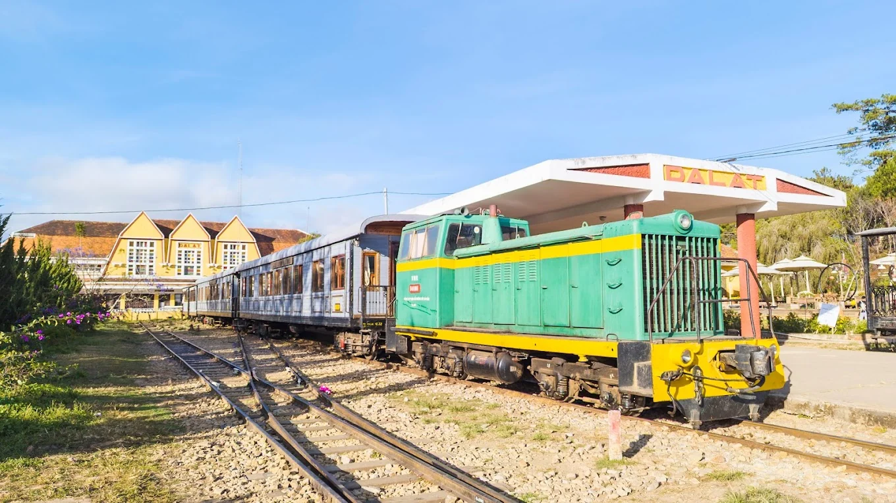
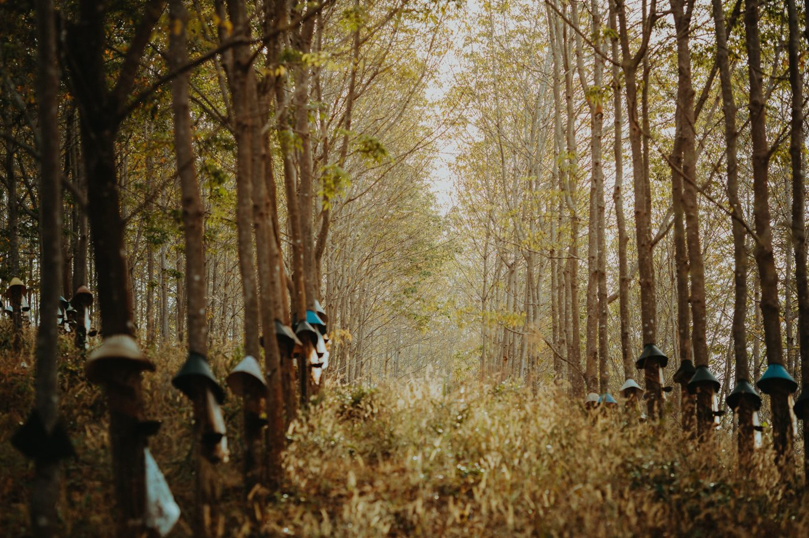
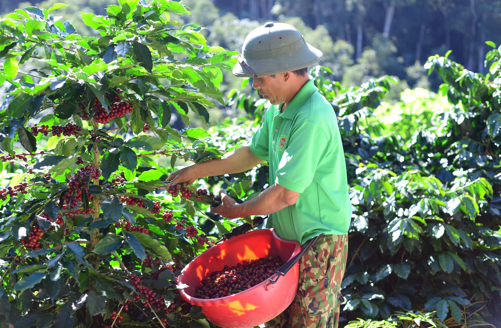
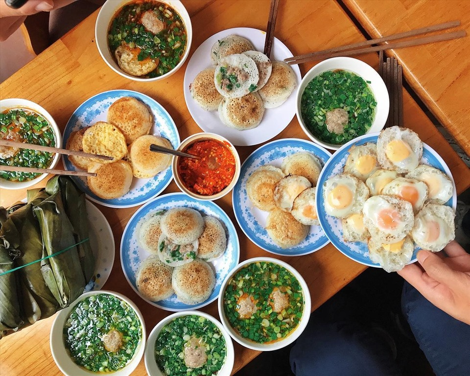
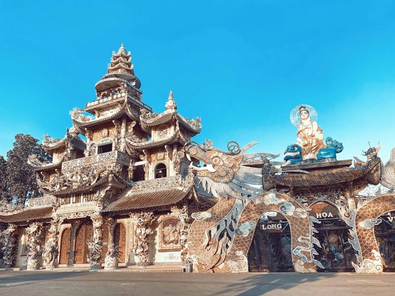
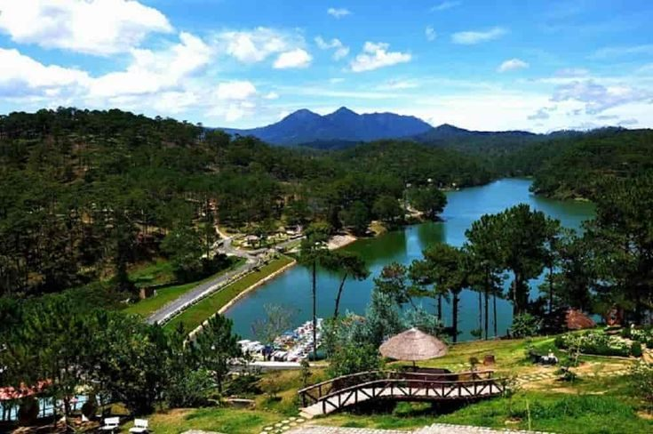

Explore iconic sites
From the train station to royal palaces, discover the unique charm of Đà Lạt.
A 4-day journey to discover the real Đà Lạt —
nature, culture, local life and unforgettable moments.

From the train station to royal palaces, discover the unique charm of Đà Lạt.

Breathe in fresh air, walk through pine forests and feel the true Đà Lạt.

Get your hands dirty, learn local farming and harvest fresh produce.

Taste authentic dishes, indulge in signature drinks and explore hidden cafes.

Uncover the chilling stories of Đà Lạt’s haunted house — if you dare!

Relax in handpicked accommodations with unforgettable views.
Same place, different feelings ♡